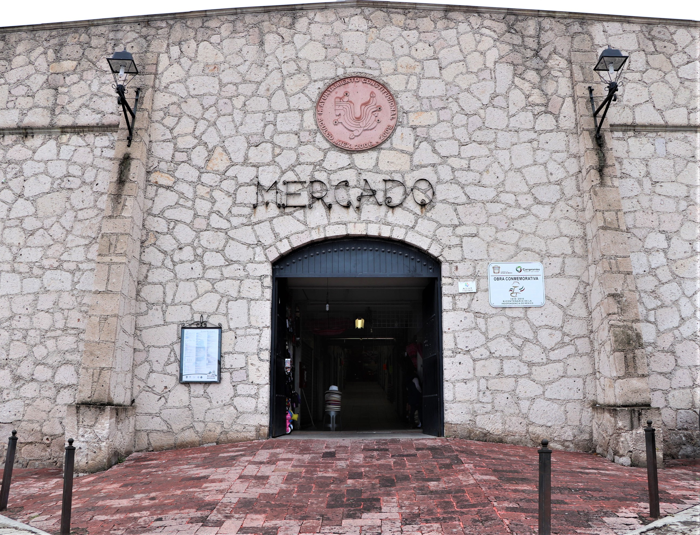
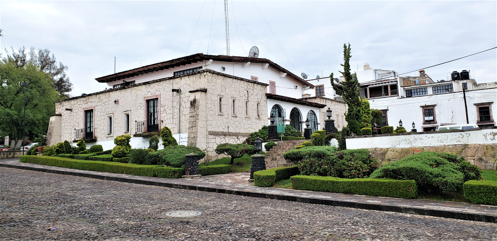

Entre estos sistemas de conducción de agua, el más vistoso por sus características constructivas, aunque no el más extenso ni importante, es el acueducto que perteneció a la hacienda de Ñadó.
Aquí se hospedó Miguel Hidalgo en 1810. El Padre de la Patria pernoctó en este lugar durante las vísperas de la batalla de Aculco del 7 de noviembre. Es aquí también donde los insurgentes sufrieron su primera derrota durante la guerra de Independencia.

La Concepción es una caída de 25 metros de altura sobre espectaculares paredes de basalto. La cascada es una vista magnífica, que puede ser observada desde el borde o desde un mirador ubicado al otro lado de la caída.
.jpg)
La cascada de Tixhiñu se ubica 10 kilómetros de la cabecera municipal de Aculco, pueblo mágico en el Estado de México, lugar en el que habitan indígenas otomíes, quienes le asignaron el nombre a la cascada
El topónimo Tixhiñú deriva de las raíces otomíes t’öhö-cerro y xiñu-nariz, esto es "cerro de la nariz"; aunque la forma regular de este cerro visto desde casi cualquier perspectiva le da una silueta triangular que justifica plenamente el nombre

Conoce la Ruta del Queso Artesanal en Aculco, Estado de México. Prueba las distintas variedades de queso que se producen en el lugar y degústalos junto a una copa de vino.
Los lavaderos, ubicados sobre un manantial que ha abastecido de agua al pueblo por más de cuatro siglos, se construyeron en 1882 para uso de la comunidad y ahora son motivo de una gran leyenda sobre “La bruja de Aculco”
En los primeros años del siglo XX, un par de buenos aficionados a la fiesta brava tuvieron la idea de construir una plaza de toros en Aculco.

Mercado Municipal >>>
En este pintoresco mercado podrás adquirir ricos platillos ya preparados y artesanías del lugar; se ubica en la Unidad Jorge Jiménez Cantú, formada por un pequeño auditorio, un kínder, una guardería, un área para el tianguis, y una singular fuente llamada El Oso Bueno, labrada en cantera verde oriunda de la región.

Palacio Municipal >>>
Esta gran casa, que fue por lo tanto sede del Ayuntamiento de Aculco por cerca de cien años, tenía labrada en una de sus piedras la cifra 1787

Estos pilares hacen parte de el Ferrocarril Cazadero-Solís que se construyó con la intención de ligar transversalmente las rutas del Ferrocarril Mexicano y del Ferrocarril Central a través de una vía angosta que comunicaría precisamente las estaciones de Cazadero

Recuerdo viviente del año 1937 se ubica al fondo de la barranca de la comunidad de San Pedro Denxhi y fue construido para trasladarse a sus tierras de cultivo del otro lado de la barranca, territorio que ya pertenece al municipio de San Juan del Río, Querétaro.

El Puente Colorado se encuentra sobre lo que antiguamente fue la calzada de acceso a Aculco, es decir, la prolongación de la calle Matamoros hacia el norte, que servía de enlace a este pueblo con la hacienda de Arroyozarco y con el Camino Real de Tierra Adentro.

Puente Blanco, que forma parte del mismo sistema que comunicaba a Aculco con la hacienda de Arroyozarco y el Camino real de Tierra Adentro.
¿Alguna pregunta? Háganos una pregunta en 44220743091